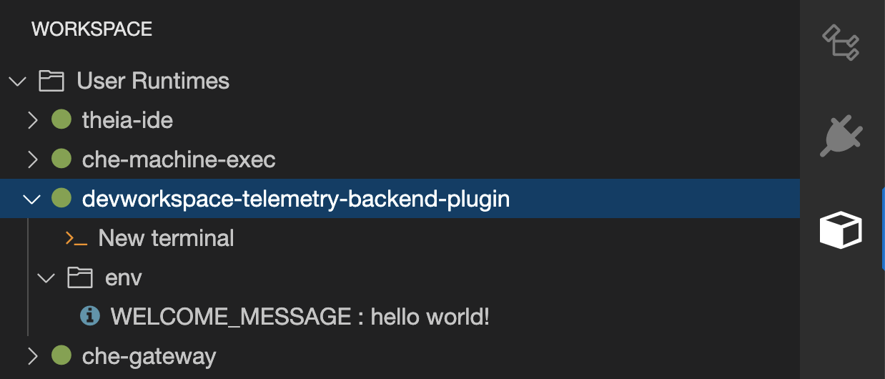

Creating a telemetry plugin
This section shows how to create an AnalyticsManager class that extends AbstractAnalyticsManager and implements the following methods:
-
isEnabled()- determines whether the telemetry backend is functioning correctly. This can mean always returningtrue, or have more complex checks, for example, returningfalsewhen a connection property is missing. -
destroy()- cleanup method that is run before shutting down the telemetry backend. This method sends theWORKSPACE_STOPPEDevent. -
onActivity()- notifies that some activity is still happening for a given user. This is mainly used to sendWORKSPACE_INACTIVEevents. -
onEvent()- submits telemetry events to the telemetry server, such asWORKSPACE_USEDorWORKSPACE_STARTED. -
increaseDuration()- increases the duration of a current event rather than sending many events in a small frame of time.
The following sections cover:
-
Creating a telemetry server to echo events to standard output.
-
Extending the Che telemetry client and implementing a user’s custom backend.
-
Creating a
plugin.yamlfile representing a DevWorkspace plugin for the custom backend. -
Specifying of a location of a custom plugin to Che by setting the
workspacesDefaultPluginsattribute from theCheClustercustom resource.
Getting started
This document describes the steps required to extend the Che telemetry system to communicate with to a custom backend:
-
Creating a server process that receives events
-
Extending Che libraries to create a backend that sends events to the server
-
Packaging the telemetry backend in a container and deploying it to an image registry
-
Adding a plugin for your backend and instructing Che to load the plugin in your DevWorkspaces
A finished example of the telemetry backend is available here.
Creating a server that receives events
For demonstration purposes, this example shows how to create a server that receives events from our telemetry plugin and writes them to standard output.
For production use cases, consider integrating with a third-party telemetry system (for example, Segment, Woopra) rather than creating your own telemetry server. In this case, use your provider’s APIs to send events from your custom backend to their system.
The following Go code starts a server on port 8080 and writes events to standard output:
main.gopackage main
import (
"io/ioutil"
"net/http"
"go.uber.org/zap"
)
var logger *zap.SugaredLogger
func event(w http.ResponseWriter, req *http.Request) {
switch req.Method {
case "GET":
logger.Info("GET /event")
case "POST":
logger.Info("POST /event")
}
body, err := req.GetBody()
if err != nil {
logger.With("err", err).Info("error getting body")
return
}
responseBody, err := ioutil.ReadAll(body)
if err != nil {
logger.With("error", err).Info("error reading response body")
return
}
logger.With("body", string(responseBody)).Info("got event")
}
func activity(w http.ResponseWriter, req *http.Request) {
switch req.Method {
case "GET":
logger.Info("GET /activity, doing nothing")
case "POST":
logger.Info("POST /activity")
body, err := req.GetBody()
if err != nil {
logger.With("error", err).Info("error getting body")
return
}
responseBody, err := ioutil.ReadAll(body)
if err != nil {
logger.With("error", err).Info("error reading response body")
return
}
logger.With("body", string(responseBody)).Info("got activity")
}
}
func main() {
log, _ := zap.NewProduction()
logger = log.Sugar()
http.HandleFunc("/event", event)
http.HandleFunc("/activity", activity)
logger.Info("Added Handlers")
logger.Info("Starting to serve")
http.ListenAndServe(":8080", nil)
}Create a container image based on this code and expose it as a deployment in OpenShift in the eclipse-che namespace. The code for the example telemetry server is available at telemetry-server-example. To deploy the telemetry server, clone the repository and build the container:
$ git clone https://github.com/che-incubator/telemetry-server-example $ cd telemetry-server-example $ docker build -t registry/organization/telemetry-server-example:latest . $ docker push registry/organization/telemetry-server-example:latest
Both manifest_with_ingress.yaml and manifest_with_route contain definitions for a Deployment and Service. The former also defines a Kubernetes Ingress, while the latter defines an OpenShift Route.
In the manifest file, replace the image and host fields to match the image you pushed, and the public hostname of your Kubernetes or OpenShift cluster. Then run:
$ kubectl apply -f manifest_with_[ingress|route].yaml -n eclipse-che
Creating the back-end project
| For fast feedback when developing, it is recommended to do development inside a DevWorkspace. This way, you can run the application in a cluster and receive events from the front-end telemetry plugin. |
-
Maven Quarkus project scaffolding:
mvn io.quarkus:quarkus-maven-plugin:2.7.1.Final:create \ -DprojectGroupId=mygroup -DprojectArtifactId=devworkspace-telemetry-example-plugin \ -DprojectVersion=1.0.0-SNAPSHOT -
Remove the files under
src/main/java/mygroupandsrc/test/java/mygroup. -
Consult the GitHub packages for the latest version and Maven coordinates of
backend-base. -
Add the following dependencies to your
pom.xml:Example 2.pom.xml<!-- Required --> <dependency> <groupId>org.eclipse.che.incubator.workspace-telemetry</groupId> <artifactId>backend-base</artifactId> <version>LATEST VERSION FROM PREVIOUS STEP</version> </dependency> <!-- Used to make http requests to the telemetry server --> <dependency> <groupId>io.quarkus</groupId> <artifactId>quarkus-rest-client</artifactId> </dependency> <dependency> <groupId>io.quarkus</groupId> <artifactId>quarkus-rest-client-jackson</artifactId> </dependency> -
Create a personal access token with
read:packagespermissions to download theorg.eclipse.che.incubator.workspace-telemetry:backend-basedependency from GitHub packages. -
Add your GitHub username, personal access token and
che-incubatorrepository details in your~/.m2/settings.xmlfile:Example 3.settings.xml<settings xmlns="http://maven.apache.org/SETTINGS/1.0.0" xmlns:xsi="http://www.w3.org/2001/XMLSchema-instance" xsi:schemaLocation="http://maven.apache.org/SETTINGS/1.0.0 http://maven.apache.org/xsd/settings-1.0.0.xsd"> <servers> <server> <id>che-incubator</id> <username>YOUR GITHUB USERNAME</username> <password>YOUR GITHUB TOKEN</password> </server> </servers> <profiles> <profile> <id>github</id> <activation> <activeByDefault>true</activeByDefault> </activation> <repositories> <repository> <id>central</id> <url>https://repo1.maven.org/maven2</url> <releases><enabled>true</enabled></releases> <snapshots><enabled>false</enabled></snapshots> </repository> <repository> <id>che-incubator</id> <url>https://maven.pkg.github.com/che-incubator/che-workspace-telemetry-client</url> </repository> </repositories> </profile> </profiles> </settings>
Creating a concrete implementation of AnalyticsManager and adding specialized logic
Create two files in your project under src/main/java/mygroup:
-
MainConfiguration.java- contains configuration provided toAnalyticsManager. -
AnalyticsManager.java- contains logic specific to the telemetry system.
MainConfiguration.javapackage org.my.group;
import java.util.Optional;
import javax.enterprise.context.Dependent;
import javax.enterprise.inject.Alternative;
import org.eclipse.che.incubator.workspace.telemetry.base.BaseConfiguration;
import org.eclipse.microprofile.config.inject.ConfigProperty;
@Dependent
@Alternative
public class MainConfiguration extends BaseConfiguration {
@ConfigProperty(name = "welcome.message") (1)
Optional<String> welcomeMessage; (2)
}| 1 | A MicroProfile configuration annotation is used to inject the welcome.message configuration. |
For more details on how to set configuration properties specific to your backend, see the Quarkus Configuration Reference Guide.
AnalyticsManager.javapackage org.my.group;
import java.util.HashMap;
import java.util.Map;
import javax.enterprise.context.Dependent;
import javax.enterprise.inject.Alternative;
import javax.inject.Inject;
import org.eclipse.che.incubator.workspace.telemetry.base.AbstractAnalyticsManager;
import org.eclipse.che.incubator.workspace.telemetry.base.AnalyticsEvent;
import org.eclipse.che.incubator.workspace.telemetry.finder.DevWorkspaceFinder;
import org.eclipse.che.incubator.workspace.telemetry.finder.UsernameFinder;
import org.eclipse.microprofile.rest.client.inject.RestClient;
import org.slf4j.Logger;
import static org.slf4j.LoggerFactory.getLogger;
@Dependent
@Alternative
public class AnalyticsManager extends AbstractAnalyticsManager {
private static final Logger LOG = getLogger(AbstractAnalyticsManager.class);
public AnalyticsManager(MainConfiguration mainConfiguration, DevWorkspaceFinder devworkspaceFinder, UsernameFinder usernameFinder) {
super(mainConfiguration, devworkspaceFinder, usernameFinder);
mainConfiguration.welcomeMessage.ifPresentOrElse( (1)
(str) -> LOG.info("The welcome message is: {}", str),
() -> LOG.info("No welcome message provided")
);
}
@Override
public boolean isEnabled() {
return true;
}
@Override
public void destroy() {}
@Override
public void onEvent(AnalyticsEvent event, String ownerId, String ip, String userAgent, String resolution, Map<String, Object> properties) {
LOG.info("The received event is: {}", event); (2)
}
@Override
public void increaseDuration(AnalyticsEvent event, Map<String, Object> properties) { }
@Override
public void onActivity() {}
}| 1 | Log the welcome message if it was provided. |
| 2 | Log the event received from the front-end plugin. |
Since org.my.group.AnalyticsManager and org.my.group.MainConfiguration are alternative beans, specify them using the quarkus.arc.selected-alternatives property in src/main/resources/application.properties.
application.propertiesquarkus.arc.selected-alternatives=MainConfiguration,AnalyticsManager
Running the application within a DevWorkspace
-
Set the
DEVWORKSPACE_TELEMETRY_BACKEND_PORTenvironment variable in the DevWorkspace. Here, the value is set to4167.spec: template: attributes: workspaceEnv: - name: DEVWORKSPACE_TELEMETRY_BACKEND_PORT value: '4167' -
Restart the DevWorkspace from the Eclipse Che dashboard.
-
Run the following command within a DevWorkspace’s terminal window to start the application. Use the
--settingsflag to specify path to the location of thesettings.xmlfile that contains the GitHub access token.$ mvn --settings=settings.xml quarkus:dev -Dquarkus.http.port=${DEVWORKSPACE_TELEMETRY_BACKEND_PORT}The application now receives telemetry events through port
4167from the front-end plugin.
-
Verify that the following output is logged:
INFO [org.ecl.che.inc.AnalyticsManager] (Quarkus Main Thread) No welcome message provided INFO [io.quarkus] (Quarkus Main Thread) devworkspace-telemetry-example-plugin 1.0.0-SNAPSHOT on JVM (powered by Quarkus 2.7.2.Final) started in 0.323s. Listening on: http://localhost:4167 INFO [io.quarkus] (Quarkus Main Thread) Profile dev activated. Live Coding activated. INFO [io.quarkus] (Quarkus Main Thread) Installed features: [cdi, kubernetes-client, rest-client, rest-client-jackson, resteasy, resteasy-jsonb, smallrye-context-propagation, smallrye-openapi, swagger-ui, vertx]
-
To verify that the
onEvent()method ofAnalyticsManagerreceives events from the front-end plugin, press the l key to disable Quarkus live coding and edit any file within the IDE. The following output should be logged:INFO [io.qua.dep.dev.RuntimeUpdatesProcessor] (Aesh InputStream Reader) Live reload disabled INFO [org.ecl.che.inc.AnalyticsManager] (executor-thread-2) The received event is: Edit Workspace File in Che
Implementing isEnabled()
For the purposes of the example, this method always returns true whenever it is called.
AnalyticsManager.java@Override
public boolean isEnabled() {
return true;
}It is possible to put more complex logic in isEnabled(). For example, the hosted Che Woopra backend checks that a configuration property exists before determining if the backend is enabled.
Implementing onEvent()
onEvent() sends the event received by the backend to the telemetry system. For the example application, it sends an HTTP POST payload to the /event endpoint from the telemetry server.
Sending a POST request to the example telemetry server
For the following example, the telemetry server application is deployed to OpenShift at the following URL: http://little-telemetry-server-che.apps-crc.testing, where apps-crc.testing is the ingress domain name of the OpenShift cluster.
-
Set up the RESTEasy REST Client by creating
TelemetryService.javaExample 8.TelemetryService.javapackage org.my.group; import java.util.Map; import javax.ws.rs.Consumes; import javax.ws.rs.POST; import javax.ws.rs.Path; import javax.ws.rs.core.MediaType; import javax.ws.rs.core.Response; import org.eclipse.microprofile.rest.client.inject.RegisterRestClient; @RegisterRestClient public interface TelemetryService { @POST @Path("/event") (1) @Consumes(MediaType.APPLICATION_JSON) Response sendEvent(Map<String, Object> payload); }1 The endpoint to make the POSTrequest to. -
Specify the base URL for
TelemetryServicein thesrc/main/resources/application.propertiesfile:Example 9.application.propertiesorg.my.group.TelemetryService/mp-rest/url=http://little-telemetry-server-che.apps-crc.testing
-
Inject
TelemetryServiceintoAnalyticsManagerand send aPOSTrequest inonEvent()Example 10.AnalyticsManager.java@Dependent @Alternative public class AnalyticsManager extends AbstractAnalyticsManager { @Inject @RestClient TelemetryService telemetryService; ... @Override public void onEvent(AnalyticsEvent event, String ownerId, String ip, String userAgent, String resolution, Map<String, Object> properties) { Map<String, Object> payload = new HashMap<String, Object>(properties); payload.put("event", event); telemetryService.sendEvent(payload); }This sends an HTTP request to the telemetry server and automatically delays identical events for a small period of time. The default duration is 1500 milliseconds.
Implementing increaseDuration()
Many telemetry systems recognize event duration. The AbstractAnalyticsManager merges similar events that happen in the same frame of time into one event. This implementation of increaseDuration() is a no-op. This method uses the APIs of the user’s telemetry provider to alter the event or event properties to reflect the increased duration of an event.
AnalyticsManager.java@Override
public void increaseDuration(AnalyticsEvent event, Map<String, Object> properties) {}Implementing onActivity()
Set an inactive timeout limit, and use onActivity() to send a WORKSPACE_INACTIVE event if the last event time is longer than the timeout.
AnalyticsManager.javapublic class AnalyticsManager extends AbstractAnalyticsManager {
...
private long inactiveTimeLimit = 60000 * 3;
...
@Override
public void onActivity() {
if (System.currentTimeMillis() - lastEventTime >= inactiveTimeLimit) {
onEvent(WORKSPACE_INACTIVE, lastOwnerId, lastIp, lastUserAgent, lastResolution, commonProperties);
}
}Implementing destroy()
When destroy() is called, send a WORKSPACE_STOPPED event and shutdown any resources such as connection pools.
AnalyticsManager.java@Override
public void destroy() {
onEvent(WORKSPACE_STOPPED, lastOwnerId, lastIp, lastUserAgent, lastResolution, commonProperties);
}Running mvn quarkus:dev as described in Running the application within a DevWorkspace and terminating the application with Ctrl+C sends a WORKSPACE_STOPPED event to the server.
Packaging the Quarkus application
See the Quarkus documentation for the best instructions to package the application in a container. Build and push the container to a container registry of your choice.
Sample Dockerfile for building a Quarkus image running with JVM
Dockerfile.jvmFROM registry.access.redhat.com/ubi8/openjdk-11:1.11
ENV LANG='en_US.UTF-8' LANGUAGE='en_US:en'
COPY --chown=185 target/quarkus-app/lib/ /deployments/lib/
COPY --chown=185 target/quarkus-app/*.jar /deployments/
COPY --chown=185 target/quarkus-app/app/ /deployments/app/
COPY --chown=185 target/quarkus-app/quarkus/ /deployments/quarkus/
EXPOSE 8080
USER 185
ENTRYPOINT ["java", "-Dquarkus.http.host=0.0.0.0", "-Djava.util.logging.manager=org.jboss.logmanager.LogManager", "-Dquarkus.http.port=${DEVWORKSPACE_TELEMETRY_BACKEND_PORT}", "-jar", "/deployments/quarkus-run.jar"]To build the image, run:
mvn package && \ docker build -f src/main/docker/Dockerfile.jvm -t image:tag .
Sample Dockerfile for building a Quarkus native image
Dockerfile.nativeFROM registry.access.redhat.com/ubi8/ubi-minimal:8.5
WORKDIR /work/
RUN chown 1001 /work \
&& chmod "g+rwX" /work \
&& chown 1001:root /work
COPY --chown=1001:root target/*-runner /work/application
EXPOSE 8080
USER 1001
CMD ["./application", "-Dquarkus.http.host=0.0.0.0", "-Dquarkus.http.port=$DEVWORKSPACE_TELEMETRY_BACKEND_PORT}"]To build the image, run:
mvn package -Pnative -Dquarkus.native.container-build=true && \ docker build -f src/main/docker/Dockerfile.native -t image:tag .
Creating a plugin.yaml for your plugin
Create a plugin.yaml devfile v2 file representing a DevWorkspace plugin that runs your custom backend in a DevWorkspace Pod. For more information about devfile v2, see Devfile v2 documentation
plugin.yamlschemaVersion: 2.1.0
metadata:
name: devworkspace-telemetry-backend-plugin
version: 0.0.1
description: A Demo telemetry backend
displayName: Devworkspace Telemetry Backend
components:
- name: devworkspace-telemetry-backend-plugin
attributes:
workspaceEnv:
- name: DEVWORKSPACE_TELEMETRY_BACKEND_PORT
value: '4167'
container:
image: YOUR IMAGE (1)
env:
- name: WELCOME_MESSAGE (2)
value: 'hello world!'| 1 | Specify the container image built from Packaging the Quarkus application. |
| 2 | Set the value for the welcome.message optional configuration property from Example 4. |
Typically, the user deploys this file to a corporate web server. This guide demonstrates how to create an Apache web server on OpenShift and host the plugin there.
Create a ConfigMap object that references the new plugin.yaml file.
$ oc create configmap --from-file=plugin.yaml -n eclipse-che telemetry-plugin-yaml
Create a deployment, a service, and a route to expose the web server. The deployment references this ConfigMap object and places it in the /var/www/html directory.
manifest.yamlkind: Deployment
apiVersion: apps/v1
metadata:
name: apache
spec:
replicas: 1
selector:
matchLabels:
app: apache
template:
metadata:
labels:
app: apache
spec:
volumes:
- name: plugin-yaml
configMap:
name: telemetry-plugin-yaml
defaultMode: 420
containers:
- name: apache
image: 'registry.redhat.io/rhscl/httpd-24-rhel7:latest'
ports:
- containerPort: 8080
protocol: TCP
resources: {}
volumeMounts:
- name: plugin-yaml
mountPath: /var/www/html
strategy:
type: RollingUpdate
rollingUpdate:
maxUnavailable: 25%
maxSurge: 25%
revisionHistoryLimit: 10
progressDeadlineSeconds: 600
---
kind: Service
apiVersion: v1
metadata:
name: apache
spec:
ports:
- protocol: TCP
port: 8080
targetPort: 8080
selector:
app: apache
type: ClusterIP
---
kind: Route
apiVersion: route.openshift.io/v1
metadata:
name: apache
spec:
host: apache-che.apps-crc.testing
to:
kind: Service
name: apache
weight: 100
port:
targetPort: 8080
wildcardPolicy: None$ oc apply -f manifest.yaml
-
After the deployment has started, confirm that
plugin.yamlis available in the web server:$ curl apache-che.apps-crc.testing/plugin.yaml
Specifying the telemetry plugin in a DevWorkspace
-
Add the following to the
componentsfield of an existing DevWorkspace:components: ... - name: telemetry-plugin plugin: uri: http://apache-che.apps-crc.testing/plugin.yaml -
Start the DevWorkspace from the Che dashboard.
-
Verify that the telemetry plugin container is running in the DevWorkspace pod. Here, this is verified by checking the Workspace view within the editor.
 -
Edit files within the editor and observe their events in the example telemetry server’s logs.
Applying the telemetry plugin for all DevWorkspaces
Set the telemetry plugin as a default plugin. Default plugins are applied on DevWorkspace startup for new and existing DevWorkspaces.
-
Configure the
CheClusterCustom Resource. See Using the CLI to configure the CheCluster Custom Resource.spec: devEnvironments: defaultPlugins: - editor: eclipse/che-theia/next (1) plugins: (2) - 'http://apache-che.apps-crc.testing/plugin.yaml'1 The editor identification to set the default plugins for. 2 List of URLs to devfile v2 plugins.
-
Start a new or existing DevWorkspace from the Eclipse Che dashboard.
-
Verify that the telemetry plugin is working by following the verification steps for Specifying the telemetry plugin in a DevWorkspace.